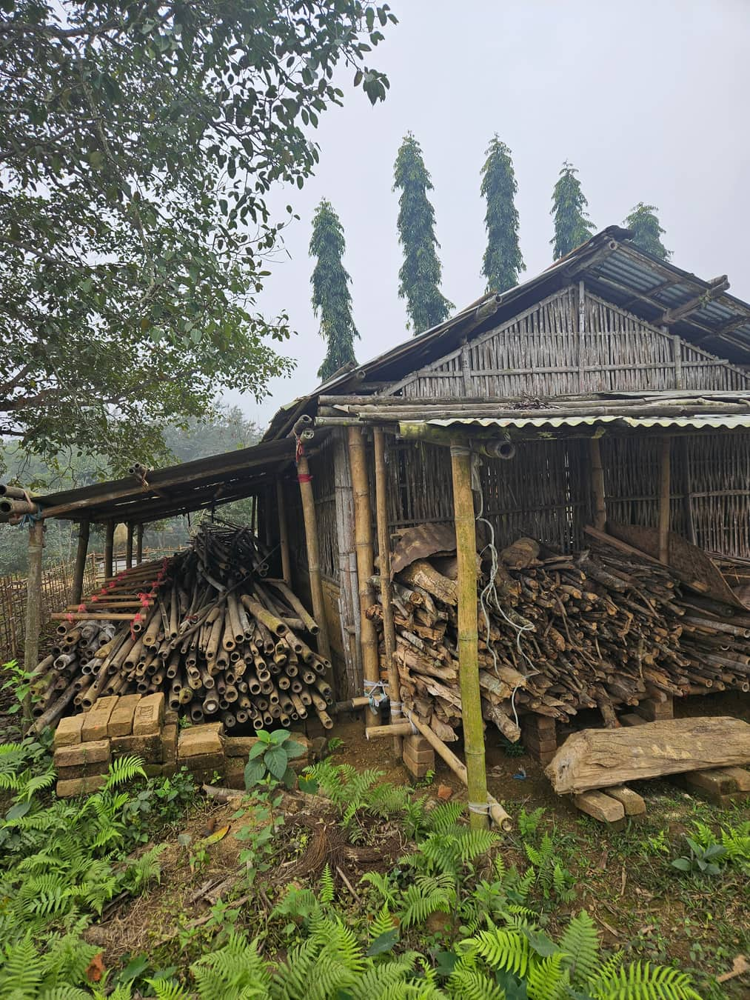
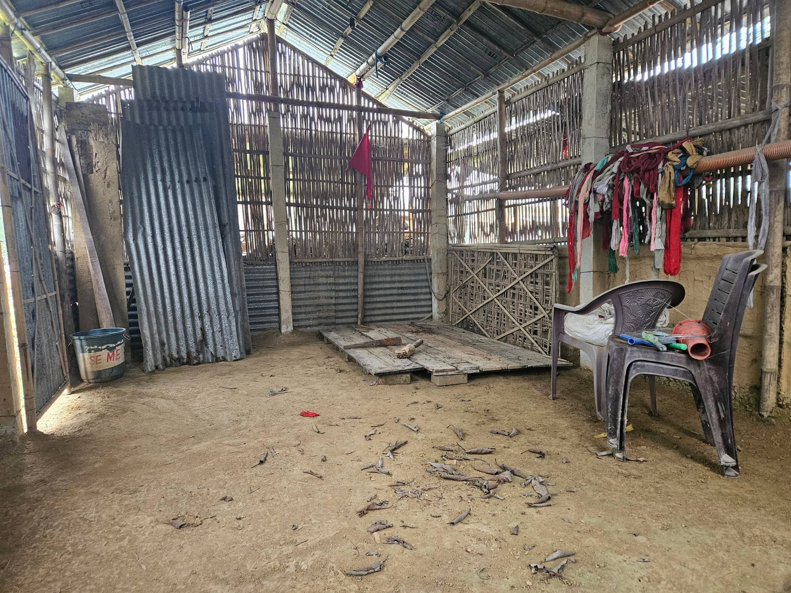

Mitraja was formally registered in September 2025. But the relationships, conversations and community engagement that shaped it began more than a decade earlier. The organisation may be new. The intent is not.
Before there was an organisation, there were relationships. For years, the founders worked alongside young people and communities, listening, learning and having conversations about the challenges people were experiencing: not always about predefined development programmes, but about life, education, work, identity, culture, opportunity, community, the future.
Over time, one realisation became increasingly clear: many of the problems communities face are interconnected, and many of the solutions are already within the community. What was missing was often the space to bring people together, recognise what already existed and create pathways to resources and collective action.
What if a community could create its own space? That question led us back to a story the community itself had already written: Apollo Club.
The communities had begun rebuilding their lives in the 1960s. Then came the moon landing, its news travelling through radio sets in the camps. For young people living with uncertainty and scarcity, it represented something extraordinary: human possibility. If humanity could reach the moon, perhaps difficult things were not impossible. In 1982, young people from the community established Apollo Club, a space for learning, gathering, ideas and youth participation.
Apollo did not disappear. It moved through phases: active, dormant, active, dormant, witnessing changing generations and changing circumstances. After COVID, the historic space had largely become a store room. The memories remained. The possibility remained. And the community decided it was time to bring Apollo back.
Not reopening a building. Reviving a space of resilience. The revival of Apollo Club became an opportunity to reconnect generations, create a space for young people and restore something that belonged to the community's history: a place to meet, to learn, to create, to imagine.
The story changed the way we thought about development. Apollo reinforced something we had been learning through years of community engagement: sustainable change cannot simply be delivered to a community. It has to become something the community can recognise, shape, own and carry forward. That became the foundation of Mitraja.
The Apollo Library grew from community contribution: bamboo, labour, books, ideas, time, knowledge. People contributed what they could. Mitraja's role was to help connect those contributions with wider resources, partnerships and capacity-building opportunities.
The result is a living library, not simply a room filled with books.


The building itself, before and after.


The same room, before the community cleared it and after.
Our work today is organised around three reinforcing pillars.
Helping communities understand, document and value what they already have.
Connecting people and communities with knowledge, skills, partnerships and opportunities.
Strengthening leadership, participation and decision-making.
We do not measure success only by the number of activities completed. We ask a different question: can the community continue this without us? As local leadership, committees and community decision-making structures become stronger, Mitraja's role should become smaller.
Community ownership is not the final stage of our work. It is the direction of our work from the beginning.
We picked our palette the way we picked our programs, rooted in what's already here: Goalparia clay, green fields, and the quiet trust a library and a youth club need to work.
Marigold. The warmth that opens a door first. It marks every "join us" moment on this site, because that's what friendship does first: it invites.
Terracotta. The color of Goalparia clay and the pottery tradition we work with. A reminder that our programs grow out of what a community already has, not what we import.
Deep moss green. Green skills, medicinal plants, plantation work, and a climate-resilient future: the color of the land our work depends on.
Indigo ink. The quiet anchor color, for the library, for governance, for the steady kind of trust that lets a community hand a stranger their children for an afternoon.
Reviving traditional knowledge systems and local problem-solving instead of replacing them.
Building team-based, collaborative activities that actively close participation gaps.
Craft, farming and green skills turned into real, dignified income.
Mapping local plants and practices so ecological knowledge survives in the local language.
 Green Skills workshop, Day 5 of Summer Camp 2026
Green Skills workshop, Day 5 of Summer Camp 2026